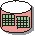

| Артефакт: Атрибуты требований |
|  |
|
|
Рабочий продукт Атрибуты требований предоставляет хранилище текста, атрибутов и трассируемости всех требований. Доступ к нему должны иметь все сотрудники организации-разработчика. |
| Краткая схема |
Для просмотра текущего состояния этого рабочего продукта должны быть доступны следующие представления: 1. Матрицы атрибутов требований
1.1 <тип требования> 2. Матрицы трассируемости требований 2.1 <тип требования>
2.1.1 <тип трассируемого требования> 3. Дерево трассируемости требований 3.1 <тип требования>
3.1.1 <тип трассируемого требования> |
|---|
| Опции представления |
Примите решение о том, следует ли документировать атрибуты в рабочих продуктах требований, в плане управления требованиями или управлять ими с помощью инструментов управления требованиями, таких как Rational RequisitePro. При использовании инструмента управления требованиями можно управлять информацией хранилища непосредственно в сохраненных представлениях в базе данных управления требованиями. |
|---|
| Справочные таблицы | |
|---|---|
| Концепции |
© Copyright IBM Corp. 1987, 2006. Все права защищены.. |